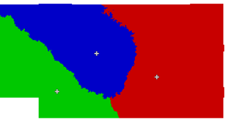
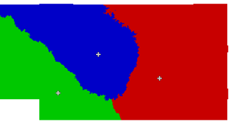
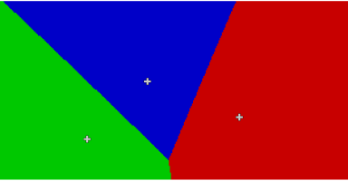
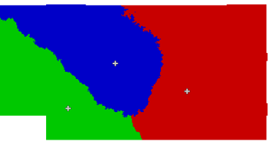

The algorithm is based on the simple XTENT formula, first published by Renfrew and Level in 1979:
I = C^a - k*d
In the formula above, I is the strength of influence that each centers has on any given location (i.e. raster map cell) in the current region. The basic idea is that each cell will be allocated to the center that scores the highest I for that cell. The magnitude of I at a cell x for each center is determined by two terms that are weighted against each other: center weight (or size) C and distance d. Obviously, a large center in close proximity will have the best chance to score the highest I (i.e. "dominate" a cell). But a very large center can also be dominant, even if it is farther away. The two coefficients a and k determine the balance between center size and distance. The importance of distance increases in a linear manner while the importance of size increases exponentially. Thus, larger centers will compete stronger in relation to smaller ones, even at an increased distance.
The result map (option output=) is of type CELL (integer) raster with
each cell representing the unique ID (category value) of the center to whose territory it belongs.
Under certain parameters (specifically: k=1, no -s flag given and straight-line distance used), r.xtent will produce the equivalent of a simple (constant C=1 and a=0.5) or weighted (variable C) Voronoi diagram. Using a distance measurement derived from a cost surface raster will improve result accuracy.
By default, r.xtent behaves differently than the original model published by Renfrew and Level in that it will
always produce a complete partitioning of space where each cell is assigned to the territory of exactly one center.
The original definition of the XTENT formula demands that I>=0.0. This can be enforced using the "strict" flag
(-s) in which case cells for which no center produces an I>=0.0 will be set to NULL in the result map.
This allows modeling incomplete partitionings of space where one ore more cells may not be assigned to the territory of
any center. Another way of achieving an incomplete partitioning, which offers a bit more
control, is to specify a "reach" attribute for each center (see section on "CONSTRAINTS" below).
The a and k coefficients are set globally, but center weight
The color of centers' territories in the output map can be controlled by suppling an attribute of type string that is set to the format RRR:GGG:BBB to specify red, green and blue intensity, respectively (option rgb_column=). Intensities can be in the range 0 to 255 for each component. E.g. 125:125:125 is a neutral gray. By default, r.xtent looks for a coloring attribute named "GRASSRGB" in the input map, which is in accordance with the behavior of d.vect.
Category and color attributes have default names ("cat" and "GRASSRGB"), which will be used, if present. If the respective attributes are not found or not of the rigth type, a warning will be issued and defaults used (i.e., a new index starting at "1" and a random color table).
A summary of the model output can be written to an ASCII file using the report= option. To get an output that is better suited for import into a spreadsheet, set the "tabular" flag (-t).
The report will contain at most the following fields for each center (some of the fields will not be shown or set to "n.a.", depending on the model option and results):
The "dominates" line is skipped in the tabular report output as it will potentially create very long fields. The "dominates" relationship can be vizualized using a vector map symbology based on the "dominated by" attribute.
If boundaries and/or pathways are to be added to the cost surfaces then they should be "burned" into a friction surfaces for use with r.walk. The r.burn.frict module should be used for this purpose.
Pathways should be "burned" after boundaries if pathways across boundaries (such as bridges) need to be modeled.
Both the competitor's ID and the competition strength can be mapped (options comp_id= and comp_strength=) and may form the basis for interpretations. It is possible, e.g., to map "conflict" zones between center A and any number of other centers by isolating the cells within the territory of A whose competition exceeds a threshold value (e.g. 0.5) and optionally filtering them by the IDs of one or more possible competitors.
Competitor ID and competitor's strength can only be calculated for models in which at least two territories share at least one boundary.
Alternatively, competition strength can be interpreted as an error measure, with higher competition in locations where the territorial allocation may be erroneous due to flawed input data.
It is also possible to define a center A as being dominated (ruled) by another center B, which means that it cannot compete against its "ruler" and any territory dominated by A will be allocated to B. This is done by specifying an integer attribute in the input vector map which should point to the ID of the ruling center or to that of the center itself in case there is no "ruler" (option ruler=).
The competitor's ID map in combination with a threshold error value can be used to map border regions from the perspective of any center. The extent of border zones could indicate potential "trouble zones". Zones with high error are zones that are potentially hard to control for the dominant center. There may also be a close third, fourth etc. contestant, so care must be exercised with the interpretation.
Keep in mind that the calculation of costs between any cell in the region and a center is done by calculating the globally optimal shortest path from that cell to the center on a cost surface (or straight line). This assumes total spatial information being available, to the entities "on the move", an assumption that may or may not hold in a real-world scenario.
Territories should not get fragmented but form contiguous spatial phenomena. There are extreme cases, however, in which some small degree of fragmentation may occur, e.g. in topographically complex situations.
A basic model with center weight approximated by population size and store in the attribute "size" in the input map "towns"
r.xtent centers=towns output=territories c=size

The same model, but this time combined with an elevation map to get a more realistic cost of movement distance measure (attribute table field "map_names" stores the names of the cost surface maps):
r.xtent centers=towns output=territories c=size costs_att=map_names

Here, an additional vector input map of a river representing a natural boundary has been added to a friction map using r.burn.frict and used in the cost surface calculation with r.walk:


Another variation, with a smaller boundary weight (read from an attribute stored in the vector map "river" when performing the r.burn.frict step) to model a river that is easier to cross:

Another basic model, but this time with the additional a priori information that two of the towns are ruled by the third. This relationship is set in the integer attribute "ruler" in the input map "towns". The value of "ruler" is set to the category value of the ruling town (or to that of the town itself):
r.xtent centers=towns output=territories c=size ruler=ruler --o

v.voronoi, d.vect, r.walk, r.walk, r.burn.frict g.mremove
Last changed: 2009/09/28